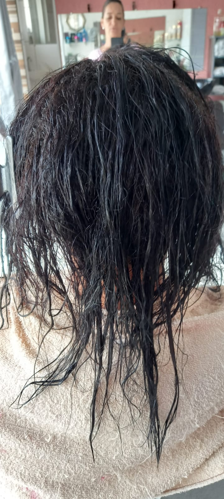

Cabelos
Corte
Remoção das pontas ou mudança de formato do cabelo para manter a saúde dos fios e o estilo desejado.
lavagem
Limpeza do couro cabeludo e dos fios com shampoo e condicionador, removendo impurezas, oleosidade e resíduos de produtos.
Escova
Alisamento temporário feito com secador e escova, que deixa o cabelo mais liso, alinhado e com brilho.
Hidratação
Tratamento que repõe água e nutrientes perdidos, devolvendo maciez, brilho e maleabilidade aos fios.

Recostrução
Reposição de massa capilar e proteínas (como a queratina) para restaurar fios danificados ou quebradiços.
Coloração
Processo químico que muda a cor natural do cabelo ou cobre fios brancos, usando tintura ou tonalizante.
Cronograma Capilar
Rotina de cuidados que intercala hidratação, nutrição e reconstrução, conforme a necessidade dos fios.
Progressiva
Tratamento químico que alisa os fios por um período prolongado, reduzindo o volume e o frizz.
Selagem
Procedimento que fecha as cutículas capilares, promovendo brilho e alinhamento — pode conter ou não química.
Cauterização
Tratamento de reconstrução profunda com queratina e calor, selando os nutrientes dentro do fio e reparando danos intensos.